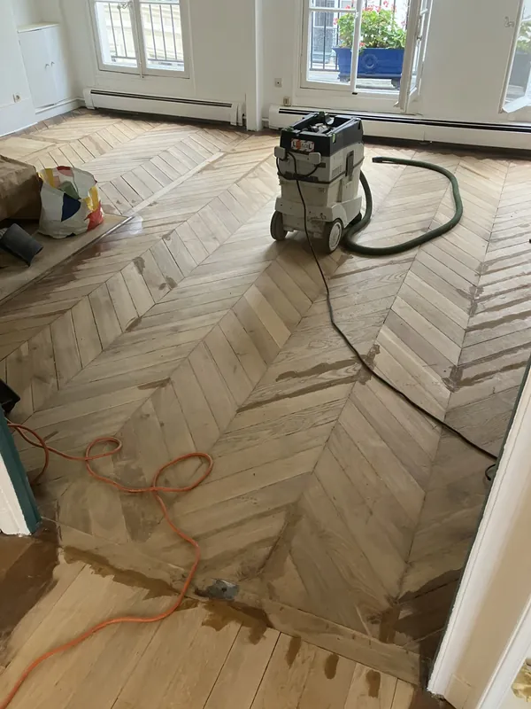
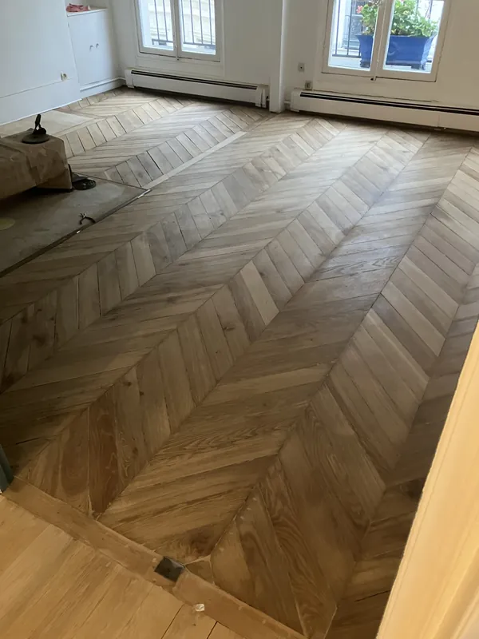

Artisan parqueteur — Paris & Île-de-France
L'art de révéler
votre parquet
· François Gaillard · SIRET 81182012500011
Ponçage et vitrification de parquet ancien à Paris. Machine planétaire HTC Husqvarna 3 disques, vernis Bona Mega Evo 3 couches, abrasifs diamant. 220+ avis Google 4,9/5.
Réalisations
Avant/après de chantiers réalisés à Paris et Île-de-France

Avant : Pâte à bois

Après : Vitrification
Services
Ponçage
Machine planétaire HTC Husqvarna 3 disques. Abrasifs diamant grain 70, séquence papier 40/60/120. Rendement : 20 m²/jour.
Vitrification Bona Mega Evo
3 couches base aqueuse. Égrenage entre couches 1 et 2. Séchage : 1h entre couches, 2h finale. Réintégration : 8h.
Spécialités
Parquet haussmannien, point de Hongrie, Versailles, chêne massif ancien. Réparation Sintobois. Enlèvement colle moquette.
Zones d'intervention
Paris et Île-de-France
Blog & Conseils
Tout savoir sur votre parquet
Technique
Fond dur, préplast, sous-couche — à quoi ça sert vraiment ?
Comparatif
Machine planétaire vs machine tambour — comparatif objectif
Comparatif
Vitrification vs huilage vs cire — quel traitement pour votre parquet ?
Comparatif
Artisan indépendant vs grande entreprise — comparatif objectif
Comparatif
Poncer ou remplacer son parquet à Paris — 63 € vs 150-300 €/m²
Comparatif
Mat vs satiné vs brillant — quelle finition pour votre parquet ?
Guide
Comment poncer un parquet en 6 étapes — guide professionnel
Guide
Comment choisir son artisan parqueteur à Paris — 6 critères
Guide
Comment préparer son appartement avant le ponçage parquet
Entretien
Comment entretenir son parquet vitrifié — 6 règles essentielles
Quartier
Ponçage parquet Mouffetard — Paris 5e
Quartier
Ponçage parquet Saint-Germain-des-Prés — Paris 6e
Quartier
Ponçage parquet Canal Saint-Martin — Paris 10e
Quartier
Ponçage parquet Bastille — Paris 11e
Quartier
Ponçage parquet Oberkampf — Paris 11e
Quartier
Ponçage parquet Butte-aux-Cailles — Paris 13e
Quartier
Ponçage parquet Passy — Paris 16e
Quartier
Ponçage parquet Batignolles — Paris 17e
Quartier
Ponçage parquet Montmartre — Paris 18e
Quartier
Ponçage parquet Abbesses — Paris 18e
Quartier
Ponçage parquet Belleville — Paris 19e-20e
Quartier
Ponçage parquet Ménilmontant — Paris 20e
Guide
Parquet sous moquette — Guide de ponçage et vitrification
Guide
Parquet caché sous revêtement — découverte et rénovation
Ressources
Fournisseurs et partenaires — Matériel et produits parquet
Chantier
Château de Bazens — Ponçage parquet Agen
Tarifs
Prix ponçage parquet Paris 2026 — 63 € TTC/m² détaillé + simulateur
Produit
Bona Mega Evo — vernis parquet Paris
Spécialité
Rénovation parquet haussmannien à Paris
Spécialité
Ponçage parquet point de Hongrie Paris
Contact
Devis gratuit par SMS
Envoyer 3–4 photos de votre parquet au 07 83 92 58 94
Réponse sous 24h · Tarif fixe 63 € TTC/m²